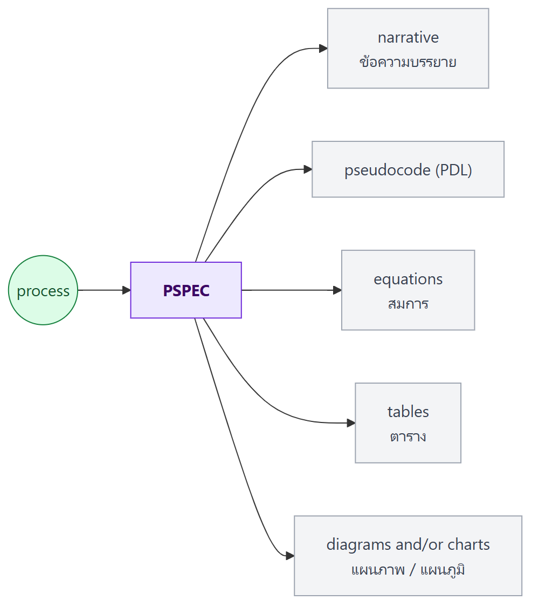
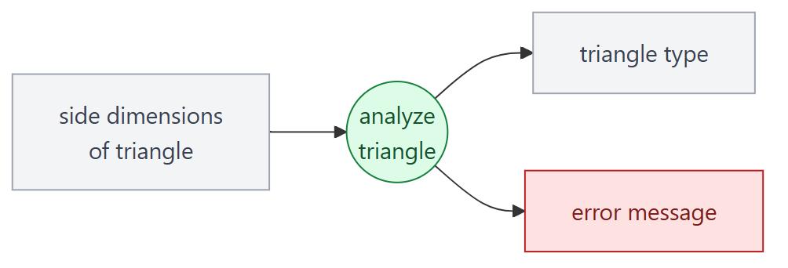
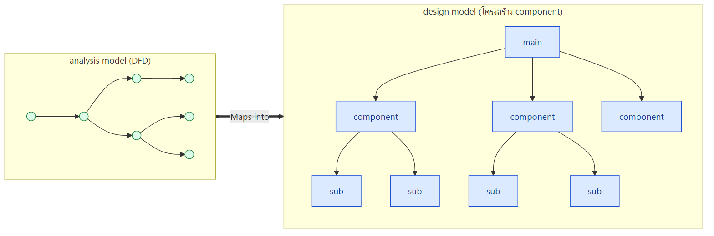
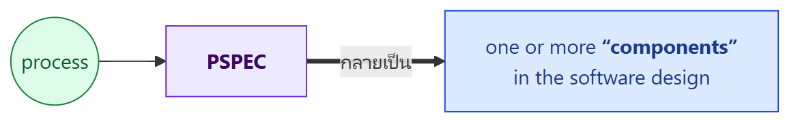
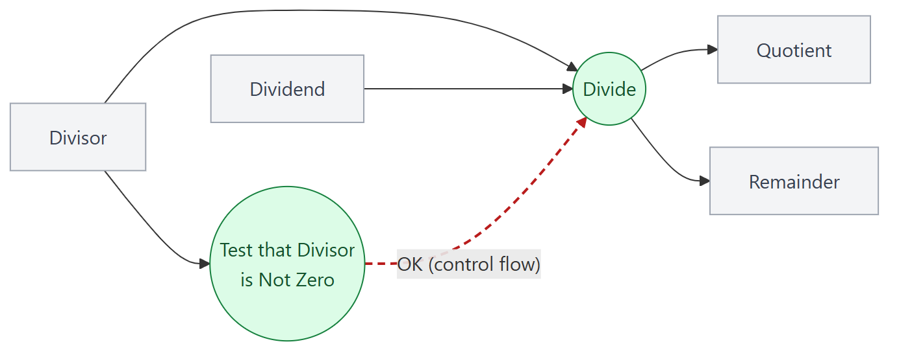
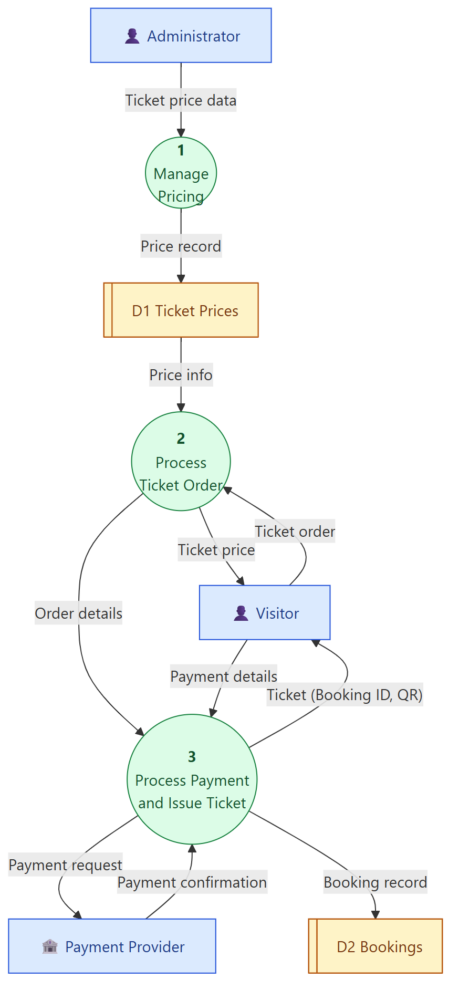
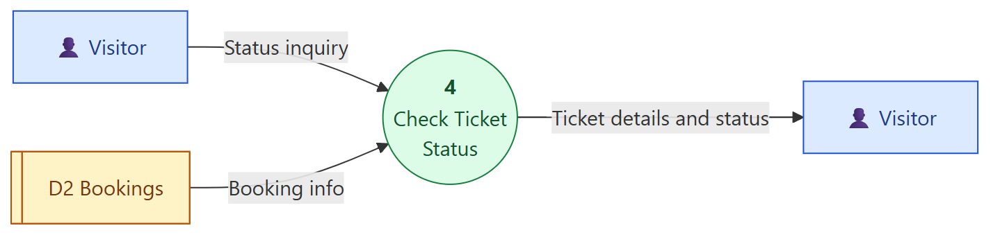
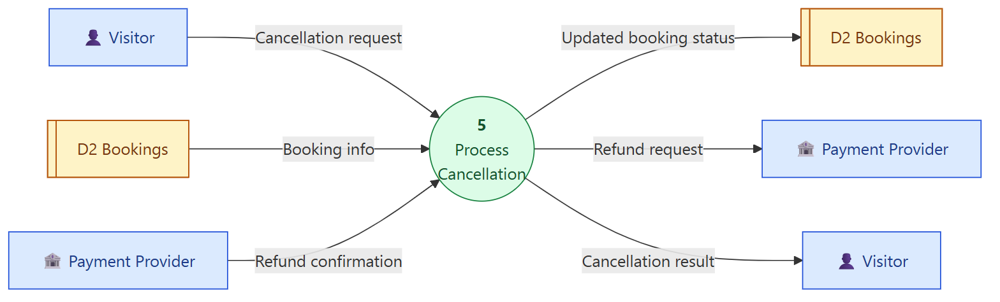
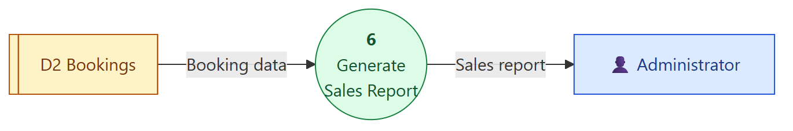
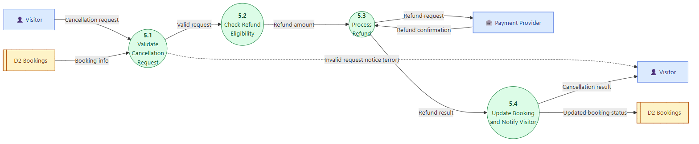

ภาพรวมบทนี้ L6 สอนวาด DFD ให้เห็นว่า ข้อมูลไหลผ่าน process ไหนบ้าง แต่ DFD ไม่ได้บอกว่า ข้างในแต่ละ process ทำงานอย่างไร บทนี้จึงเติมส่วนนั้น
- ทบทวน DFD จาก L6 (สัญลักษณ์, context diagram, hierarchy, numbering, กฎ)
- อธิบาย process ด้วย Process Specification (PSPEC), Structured English และ Decision Table
- มองต่อว่า DFD และ PSPEC จะ map ไปเป็น design อย่างไร
- Control Flow Modeling: event, control flow (เส้นประ) และ Control Specification (CSPEC)
ท้ายบทมีแบบฝึกวาด DFD Level 1 และ Level 2 ของระบบขายบัตรสวนสัตว์ ต่อจาก context diagram ใน L6
1. Recap: DFD (สไลด์ 4–9)
สไลด์ช่วงนี้ ซ้ำกับ L6 (รายละเอียดเต็มดูใน L6\สรุป-L6-Flow-Modeling-I.md) สรุปสั้น ๆ:
| หัวข้อ | สาระสำคัญ |
|---|---|
| Flow Modeling Notation | 4 สัญลักษณ์: external entity, process, data flow, data store ใน 2 สำนัก คือ Yourdon/DeMarco (process = วงกลม) และ Gane/Sarson (process = สี่เหลี่ยมมุมมน) |
| Context Diagram | DFD บนสุด, แสดงบริบทของ business process, ทั้งระบบเป็น process 0 เดียว, แสดง external entity ทั้งหมด |
| Data Flow Hierarchy | context diagram แตกเป็น Level 1 (Process AA, BB, CC พร้อม Data Store P, Q) |
| DFD Numbering + Hierarchical Consistency | Level 1 = 1, 2, 3 → Level 2 = 1.1, 2.1, 3.1 … โดย input/output ของ parent ต้องตรงกับ child |
| Rules for Data Flows | ต้องมีชื่อเสมอ, ชื่อเชิงตรรกะไม่บอกวิธี implement, ทุก flow ต้องเริ่มหรือจบที่ process |
| Don't Break DFD Rules! | (1) flow ห้ามแตกเป็นหลายข้อมูล (2) ทุก flow ต้องแตะ process (3) process ต้องมี input และ output อย่างน้อยอย่างละ 1 |
2. Explaining the Processes
ทำไมต้องอธิบาย process? DFD บอกแค่ว่า "process Calculate Gross Pay รับ Hours Worked กับ Pay Rate แล้วส่ง Gross Pay ออกมา" แต่ไม่บอกว่า คำนวณอย่างไร เช่น ทำงานเกิน 40 ชั่วโมงคิดค่าล่วงเวลาไหม ถ้าไม่อธิบาย programmer ต้องเดาเอง
เครื่องมืออธิบาย process ในบทนี้มี 3 อย่าง:
- Process Specification (PSPEC)
- Structured English
- Decision Table
3. Process Specification (PSPEC)
PSPEC คือเอกสารที่อธิบาย process หนึ่งตัวใน DFD (โดยเฉพาะ primitive process ระดับล่างสุด ตามกฎ hierarchical consistency ใน L6) เขียนได้หลายรูปแบบ:

💡 PDL = Program Design Language เป็น pseudocode ที่ผสมภาษาอังกฤษกับโครงสร้างโปรแกรม (ชื่อเต็มเสริมเอง)
ตัวอย่าง process ที่ใช้ทั้ง 2 แบบ: Analyze Triangle

PSPEC Example 1: Processing Narrative (แบบบรรยาย)
The analyze-triangle process accepts values A, B, and C that represent the side dimensions of a triangle. The process tests the dimension values to determine whether all values are positive. If a negative value is encountered, an error message is produced. The process evaluates valid input data to determine whether the dimensions define a valid triangle and if so, what type of triangle — equilateral, isosceles or scalene — is implied by the dimensions. The type is output.
สรุปไทย
- รับค่า A, B, C ที่เป็นความยาวด้านของสามเหลี่ยม
- ตรวจว่าค่าทั้งหมดเป็นบวก ถ้าเจอค่าติดลบให้ส่ง error message
- ถ้าข้อมูลถูกต้อง ตรวจว่าเป็นสามเหลี่ยมได้จริงไหม
- ถ้าได้ ระบุชนิด: equilateral (ด้านเท่า), isosceles (หน้าจั่ว), scalene (ด้านไม่เท่า)
- ส่ง ชนิดสามเหลี่ยม ออก
PSPEC Example 2: PDL (pseudocode)
read side dimensions;
if any dimension is negative then produce error message;
if the largest dimension is less than the sum of the others
then
determine number of equal sides;
if three sides are equal then type is equilateral;
if two sides are equal then type is isosceles;
if no sides are equal then 1) type is scalene; 2) output triangle type;
else output type = 0, indication that no triangle exists;
อธิบายทีละบรรทัด
| บรรทัด | ความหมาย |
|---|---|
read side dimensions |
อ่านความยาวด้าน |
if any dimension is negative |
ถ้ามีด้านติดลบ ให้แจ้ง error |
if the largest dimension is less than the sum of the others |
กฎสามเหลี่ยม: ด้านยาวสุดต้องสั้นกว่าผลรวมของอีก 2 ด้าน ถึงจะประกอบเป็นสามเหลี่ยมได้ |
determine number of equal sides |
นับว่ามีด้านเท่ากันกี่ด้าน |
| 3 ด้านเท่า / 2 ด้านเท่า / ไม่มีด้านเท่า | equilateral / isosceles / scalene |
else output type = 0 |
ถ้าผิดกฎสามเหลี่ยม ส่ง 0 หมายถึง ไม่ใช่สามเหลี่ยม |
💡 Narrative vs PDL: narrative อ่านง่ายสำหรับ stakeholder แต่กำกวมได้ ส่วน PDL ชัดเจน ใกล้โค้ด เหมาะกับ programmer
⚠️ ข้อสังเกต (ของผม): ใน PDL ต้นฉบับ คำว่า "output triangle type" เขียนติดไว้แค่กรณี scalene ถ้าอ่านตามตัวอักษร กรณี equilateral และ isosceles จะไม่ถูกส่งออก ที่ถูกควรส่งออกทุกกรณี เป็นตัวอย่างว่า pseudocode ก็เขียนพลาดได้
4. Structured English
นิยาม: ไวยากรณ์ภาษา สำหรับระบุ ตรรกะของ process
- ผสม จุดแข็งของ structured programming (โครงสร้างชัด ลำดับ เงื่อนไข วนซ้ำ) กับ ภาษาอังกฤษธรรมชาติ (อ่านง่าย)
Structured English Constructs (6 แบบ)
| # | Construct | ใช้เมื่อ | Template |
|---|---|---|---|
| 1 | Sequence of steps | ทำขั้นตอนเรียงกัน ไม่มีเงื่อนไข | [Step 1][Step 2]...[Step n] |
| 2 | Simple condition steps | เงื่อนไขมี แค่ 2 ค่า (จริง/ไม่จริง) ถ้าจริงทำชุดแรก ไม่จริงทำชุดที่สอง (ชุดที่สอง optional) | If [truth condition] then [sequence of steps or other conditional steps]else [sequence of steps or other conditional steps]End If |
| 3 | Complex condition steps | เงื่อนไขมี มากกว่า 2 ค่า ทดสอบค่าแล้วทำชุดที่ตรง | Do the following based on [condition]: Case 1: If [condition] = [value] then [steps] Case 2: If [condition] = [value] then [steps] ... Case n: If [condition] = [value] then [steps]End Case |
| 4 | Multiple conditions | ทดสอบ หลายเงื่อนไขพร้อมกัน ใช้ decision table แทน if-then-else ซ้อนกันหลายชั้น | ตาราง decision table (หัวข้อ 5) ไม่ใช่ construct ของ Structured English แต่ตั้งชื่อตารางแล้วอ้างถึงใน procedure ได้ |
| 5 | One-to-many iteration | วนทำจนเงื่อนไขเป็นเท็จ โดย ต้องทำอย่างน้อย 1 ครั้ง ไม่ว่าเงื่อนไขตอนแรกจะเป็นอะไร | Repeat the following until [truth condition]: [sequence of steps or conditional steps]End Repeat |
| 6 | Zero-to-many iteration | วนทำจนเงื่อนไขเป็นเท็จ โดย อาจไม่ทำเลยสักครั้ง ขึ้นกับเงื่อนไขตอนแรก | Do while [truth condition]: [steps]End Doหรือ For [truth condition]: [steps]End For |
⚠️ One-to-many vs Zero-to-many
- Repeat…until = ตรวจเงื่อนไข ท้ายรอบ → ทำอย่างน้อย 1 รอบ (เหมือน
do-whileใน C/Java)- Do while / For = ตรวจเงื่อนไข ต้นรอบ → อาจทำ 0 รอบ (เหมือน
while/for) (การเทียบกับภาษาโปรแกรมเสริมเอง)
ตัวอย่าง Structured English (ผมเขียนเอง จาก process ในระบบสวนสัตว์)
Calculate Ticket Price
Set total price to 0
For each ticket in the order:
Do the following based on ticket type:
Case 1: If ticket type = "Child" then unit price = child price
Case 2: If ticket type = "Adult" then unit price = adult price
Case 3: If ticket type = "Senior" then unit price = senior price
End Case
Add unit price × quantity to total price
End For
If visit date is a special event day
then apply event price rule (see Decision Table: Event Pricing)
End If
Output total price
5. Policies and Decision Tables
นิยาม
- Policy – ชุดกฎ ที่กำหนดว่า process ต้องทำอย่างไร
- Decision table – ตาราง ที่ระบุ ชุดเงื่อนไข และ การกระทำที่สอดคล้องกัน ตามที่ต้องใช้ในการ implement policy
โครงสร้าง Decision Table
| Conditions and Actions | Rule 1 | Rule 2 | Rule 3 | … |
|---|---|---|---|---|
| [Condition] ← condition stubs | value | value | value | |
| [Condition] | value | value | value | |
| [Action / sequence of steps] ← action stubs | X | |||
| [Action / sequence of steps] | X | X |
- แถวบน (condition stubs): เงื่อนไข
- แถวล่าง (action stubs): การกระทำ
- คอลัมน์ (rules): แต่ละคอลัมน์คือ ชุดค่าของเงื่อนไข 1 ชุด และ X บอกว่าต้องทำ action ไหน
💡 decision table เหมาะกับตรรกะที่มี หลายเงื่อนไขผสมกัน เพราะถ้าเขียนเป็น if-then-else จะซ้อนกันหลายชั้นจนอ่านยาก
ตัวอย่าง: A Simple Decision Table (LMART)
Policy statement (บัตรแลกเช็คเป็นเงินสด)
"A customer with check cashing privileges is entitled to cash personal checks of up to $75.00 and payroll checks from companies pre-approved by LMART."
(ลูกค้าที่มีสิทธิ์ แลกเช็คส่วนตัวได้ไม่เกิน $75 และแลกเช็คเงินเดือนได้เฉพาะจากบริษัทที่ LMART อนุมัติไว้)
Equivalent Policy Decision Table
| Conditions and Actions | Rule 1 | Rule 2 | Rule 3 | Rule 4 |
|---|---|---|---|---|
| C1: Type of check | personal | payroll | personal | payroll |
| C2: Check amount ≤ $75.00 | yes | doesn't matter | no | doesn't matter |
| C3: Company accredited by LMART | doesn't matter | yes | doesn't matter | no |
| A1: Cash the check | X | X | ||
| A2: Don't cash the check | X | X |
อ่านแต่ละ rule
| Rule | อ่านว่า |
|---|---|
| 1 | เช็ค ส่วนตัว ยอด ≤ $75 → แลกได้ (บริษัทไม่เกี่ยว) |
| 2 | เช็ค เงินเดือน จาก บริษัทที่อนุมัติ → แลกได้ (ยอดไม่เกี่ยว) |
| 3 | เช็ค ส่วนตัว ยอด > $75 → แลกไม่ได้ |
| 4 | เช็ค เงินเดือน จาก บริษัทที่ไม่ได้อนุมัติ → แลกไม่ได้ |
💡 "doesn't matter" ช่วยลดจำนวน rule ถ้าไม่มี ต้องเขียนครบทุกชุด 2 × 2 × 2 = 8 rules (การคำนวณเสริม)
6. DFDs: A Look Ahead และ A Design Note
DFDs: A Look Ahead

- DFD ใน analysis model ถูก map ไปเป็น design model ที่เป็น โครงสร้างลำดับชั้นของ component (เรียนในช่วงหลัง midterm: design architecture)
A Design Note

- PSPEC ของ process หนึ่งตัว จะกลายเป็น component หนึ่งตัวหรือมากกว่า ในการออกแบบซอฟต์แวร์
💡 ความเชื่อมโยงทั้งวิชา: Requirement (L3) → Use case (L4) → DFD + PSPEC (L6–L7) → Design components (หลัง midterm) → Code → Test
7. Control Flow Modeling
Data flow vs Control flow
DFD ปกติแสดง "ข้อมูล" แต่บางระบบ (โดยเฉพาะระบบ real-time หรือระบบควบคุม) ต้องแสดง "เหตุการณ์ (event)" ที่สั่งให้ process ทำงานด้วย
Control Flow Modeling
- Control flow แทน "events" และ process ที่จัดการ event
- "Event" คือ เงื่อนไข Boolean (จริง/เท็จ) หาได้จาก:
- ลิสต์ sensor ทั้งหมด ที่ซอฟต์แวร์ "อ่าน"
- ลิสต์ interrupt conditions ทั้งหมด
- ลิสต์ "switch" ทั้งหมดที่ผู้ควบคุมกด
- ลิสต์ data conditions ทั้งหมด
- ย้อนดู noun/verb parse ที่ทำกับ processing narrative แล้วตรวจ "control items" ทั้งหมด ที่อาจเป็น input หรือ output ของ CSPEC
- Control flow คือสัญญาณ ที่ สั่งให้ทำคำสั่ง หรือ บอกว่ามีบางอย่างเกิดขึ้น
- Control flow เกิดขึ้นที่จุดเวลาใดเวลาหนึ่ง (discrete point in time)
| Data flow | Control flow | |
|---|---|---|
| คืออะไร | ข้อมูลที่เคลื่อนที่ | สัญญาณหรือ event (Boolean) |
| เส้น | ──► เส้นทึบ | - - -► เส้นประ |
| ถูกแปลงไหม | ถูก process แปลง | ไม่ถูกแปลง ใช้สั่งหรือแจ้ง (เสริม) |
| เวลา | ไหลต่อเนื่องได้ | เกิด ณ จุดเวลาหนึ่ง |
| ตัวอย่าง | Hours Worked, Invoice | "OK", "Door open", "Button pressed" |
Control Flows in DFD
- วาดเป็น ลูกศรเส้นประ (dotted arrow line)
- หัวลูกศรบอกทิศ ของ control flow
- เขียนชื่อ event ไว้ข้างลูกศร
ตัวอย่าง: การหาร

- Divisor (ตัวหาร) ถูกส่งไปทั้ง process Divide และ Test that Divisor is Not Zero
- ถ้าตัวหารไม่ใช่ 0 → process ทดสอบส่ง control flow "OK" (เส้นประ) ไปบอก Divide ว่าทำงานได้
- Divide รับ Divisor และ Dividend (ตัวตั้ง) แล้วส่ง Quotient (ผลหาร) และ Remainder (เศษ)
💡 "OK" ไม่ใช่ข้อมูลที่ถูกนำไปคำนวณ แต่เป็น สัญญาณอนุญาต ให้ Divide เริ่มทำงาน จึงวาดเป็นเส้นประ
8. Control Specification (CSPEC)
CSPEC อธิบายว่าระบบ ตอบสนองต่อ control flow (event) อย่างไร (คำอธิบายเสริม: PSPEC อธิบาย process ส่วน CSPEC อธิบายการควบคุม) เขียนได้หลายแบบ:
| รูปแบบ | ประเภท |
|---|---|
| State diagram | sequential spec (ลำดับของสถานะ) |
| State transition table | combinatorial spec |
| Decision tables | combinatorial spec |
| Activation tables | combinatorial spec |
(ในสไลด์ปีกกา "combinatorial spec" ครอบทั้ง 4 รายการ แต่ state diagram มีวงเล็บว่า "sequential spec" ตาราง key ของ Pressman แยก state diagram เป็น sequential และตารางแบบอื่นเป็น combinatorial)
💡 PSPEC vs CSPEC
- PSPEC = อธิบาย process ทำอะไรกับข้อมูล (narrative, PDL, Structured English, decision table)
- CSPEC = อธิบาย ระบบตอบสนองต่อ event อย่างไร (state diagram, state transition table, decision table, activation table)
decision table ใช้ได้ทั้งสองแบบ
9. Exercise: DFD Level 1 และ Level 2 ระบบขายบัตรสวนสัตว์
โจทย์
- ใช้ระบบขายบัตรสวนสัตว์ (Zoo Ticketing System)
- วาด DFD Level 1
- วาด DFD Level 2 ของ process หนึ่งตัวใน Level 1
คำตอบด้านล่างผมวาดเองเป็น แนวทาง ต่อจาก context diagram ใน L6 (entity: Visitor, Administrator, Payment Provider) ถ้าอาจารย์ให้รวม Ticket Staff ด้วย ให้เพิ่ม entity และ flow ที่เกี่ยวข้อง
ทบทวน Context Diagram (Level 0)
| Entity | Input เข้าระบบ | Output จากระบบ |
|---|---|---|
| Visitor | Ticket order (type, date, quantity), Payment details, Status inquiry, Cancellation request | Ticket price, Ticket (Booking ID, QR Code), Ticket details and status, Cancellation result |
| Administrator | Ticket price data, Visit round data | Sales report |
| Payment Provider | Payment confirmation, Refund confirmation | Payment request, Refund request |
แนวทาง DFD Level 1
Data stores
- D1 Ticket Prices (ราคาและรอบเข้าชม)
- D2 Bookings (ข้อมูลการจองและตั๋ว)
Processes
| Process | Input | Output |
|---|---|---|
| 1 Manage Pricing | Ticket price data, Visit round data (จาก Administrator) | Price record → D1 |
| 2 Process Ticket Order | Ticket order (จาก Visitor), Price info (จาก D1) | Ticket price → Visitor, Order details → 3 |
| 3 Process Payment and Issue Ticket | Order details (จาก 2), Payment details (จาก Visitor), Payment confirmation (จาก Payment Provider) | Payment request → Payment Provider, Booking record → D2, Ticket (Booking ID, QR Code) → Visitor |
| 4 Check Ticket Status | Status inquiry (จาก Visitor), Booking info (จาก D2) | Ticket details and status → Visitor |
| 5 Process Cancellation | Cancellation request (จาก Visitor), Booking info (จาก D2), Refund confirmation (จาก Payment Provider) | Refund request → Payment Provider, Updated booking status → D2, Cancellation result → Visitor |
| 6 Generate Sales Report | Booking data (จาก D2) | Sales report → Administrator |




ตรวจกับกฎ
- ✅ มี process 6 ตัว (ไม่เกิน 7)
- ✅ ทุก process มีทั้ง input และ output
- ✅ D1 เป็น interface ระหว่าง process 1 และ 2, D2 เป็น interface ระหว่าง 3, 4, 5, 6
- ✅ Balancing กับ context: flow ระหว่างระบบกับ entity ทุกเส้นใน Level 0 ยังอยู่ครบ
- ✅ ไม่มี flow ต่อ entity → store หรือ store → store
แนวทาง DFD Level 2 ของ Process 5: Process Cancellation

| Process | ทำอะไร |
|---|---|
| 5.1 Validate Cancellation Request | ตรวจว่า Booking ID มีอยู่จริง และยังไม่ถึงวันเข้าชม |
| 5.2 Check Refund Eligibility | ตรวจเงื่อนไขคืนเงินตามนโยบาย แล้วคำนวณยอดคืน |
| 5.3 Process Refund | ส่งคำขอคืนเงินไป Payment Provider และรับผลยืนยัน |
| 5.4 Update Booking and Notify Visitor | อัปเดตสถานะการจองใน D2 และแจ้งผลให้ผู้เยี่ยมชม |
ตรวจ hierarchical consistency กับ Level 1
- ✅ Input ของ process 5 ใน Level 1 (Cancellation request, Booking info, Refund confirmation) อยู่ครบใน Level 2
- ✅ Output ของ process 5 (Refund request, Updated booking status, Cancellation result) อยู่ครบ
- ✅ เลข process เป็น 5.1–5.4 ตาม parent
- ✅ flow ใหม่ภายใน (Valid request, Refund amount, Refund result) เพิ่มได้
- ✅ Invalid request notice เป็นเส้น error ที่ child เพิ่มได้ (หลักใน L6)
PSPEC ของ 5.2 ด้วย Structured English (ตัวอย่างใช้เนื้อหาบทนี้ นโยบายคืนเงินสมมติขึ้น)
Check Refund Eligibility
Do the following based on days before visit date:
Case 1: If days before visit ≥ 7 then refund amount = 100% of ticket price
Case 2: If days before visit is 3 to 6 then refund amount = 50% of ticket price
Case 3: If days before visit < 3 then refund amount = 0
End Case
If refund amount > 0
then send refund amount to Process Refund
else send "not eligible for refund" to Update Booking and Notify Visitor
End If
คำศัพท์สำคัญ
| คำศัพท์ | ความหมาย | จำง่าย ๆ ว่า |
|---|---|---|
| PSPEC (Process Specification) | เอกสารอธิบายการทำงานภายใน process หนึ่งตัว | คู่มือของ bubble |
| Processing narrative | PSPEC แบบข้อความบรรยาย | เล่าเป็นเรื่อง |
| PDL (pseudocode) | PSPEC แบบรหัสเทียม ใกล้โค้ด | กึ่งโค้ด |
| Structured English | ไวยากรณ์ผสม structured programming กับภาษาอังกฤษ ใช้ระบุตรรกะของ process | อังกฤษมีโครงสร้าง |
| Sequence | ทำเรียงกันไม่มีเงื่อนไข | ทำต่อกัน |
| Simple condition | If-then-else เงื่อนไข 2 ค่า | ถ้า…ไม่งั้น |
| Complex condition | Case เงื่อนไขมากกว่า 2 ค่า | เลือกตามกรณี |
| One-to-many iteration | Repeat…until ทำอย่างน้อย 1 รอบ | ทำก่อนค่อยเช็ก |
| Zero-to-many iteration | Do while / For อาจไม่ทำเลย | เช็กก่อนค่อยทำ |
| Policy | ชุดกฎที่กำหนดว่า process ต้องทำอย่างไร | กฎธุรกิจ |
| Decision table | ตารางเงื่อนไข × การกระทำ | ตารางถ้า-แล้ว |
| Condition stubs / Action stubs | แถวเงื่อนไข / แถวการกระทำในตาราง | แถวบน / แถวล่าง |
| Rule (ใน decision table) | คอลัมน์หนึ่งชุดค่าเงื่อนไข → action | 1 กรณี |
| "Doesn't matter" | เงื่อนไขนี้ไม่มีผลใน rule นั้น ช่วยลดจำนวน rule | ไม่สน |
| Analysis model → Design model | DFD map ไปเป็นโครงสร้าง component | จากแผนที่สู่แบบบ้าน |
| Component | ส่วนประกอบในการออกแบบซอฟต์แวร์ 1 PSPEC อาจกลายเป็นหลาย component | ชิ้นส่วน |
| Event | เงื่อนไข Boolean เช่น sensor, interrupt, switch, data condition | เกิด / ไม่เกิด |
| Control flow | สัญญาณสั่งงานหรือบอกเหตุการณ์ เกิด ณ จุดเวลาหนึ่ง วาดเป็นเส้นประ | เส้นประ |
| CSPEC (Control Specification) | อธิบายการตอบสนองต่อ control flow ด้วย state diagram หรือตาราง | คู่มือของ event |
| Sequential vs Combinatorial spec | state diagram (มีลำดับสถานะ) vs ตาราง (ผสมเงื่อนไข) | ลำดับ vs ผสม |
| State transition table / Activation table | ตารางการเปลี่ยนสถานะ / ตารางว่า event ไหนเปิด process ไหน | ตารางสถานะ / ตารางเปิดงาน |
สรุปท้ายบท / จุดที่มักออกสอบ
เรื่องที่ต้องจำ
- ทำไมต้องมี PSPEC: DFD บอกแค่ข้อมูลเข้าออก ไม่บอกว่าข้างใน process ทำอะไร
- PSPEC 5 รูปแบบ: narrative, pseudocode (PDL), equations, tables, diagrams/charts
- ตัวอย่าง Analyze Triangle ทั้งแบบ narrative และ PDL (ด้านยาวสุด < ผลรวมอีก 2 ด้าน, equilateral/isosceles/scalene, type = 0 ถ้าไม่ใช่สามเหลี่ยม)
- Structured English 6 constructs: sequence, simple condition, complex condition (case), multiple conditions (decision table), one-to-many iteration (repeat until), zero-to-many iteration (do while / for)
- Decision table: condition stubs + action stubs + rules, ตัวอย่าง LMART: เช็คส่วนตัว ≤ $75 แลกได้, เช็คเงินเดือนจากบริษัทที่อนุมัติแลกได้
- DFD (analysis model) maps into design model และ PSPEC กลายเป็นหนึ่งหรือหลาย component
- Control flow: แทน event (Boolean), เกิด ณ จุดเวลา, วาดเป็น เส้นประ พร้อมชื่อ event
- หา event จาก 5 แหล่ง: sensors, interrupts, switches, data conditions, noun/verb parse
- CSPEC: state diagram (sequential), state transition table, decision table, activation table
คู่ที่มักสับสน
| คู่ | ต่างกันที่ |
|---|---|
| PSPEC vs CSPEC | อธิบาย process และข้อมูล vs อธิบายการตอบสนองต่อ event |
| Data flow vs Control flow | เส้นทึบ ข้อมูลถูกแปลง vs เส้นประ สัญญาณ Boolean ณ จุดเวลา |
| Narrative vs PDL | อ่านง่ายแต่กำกวมได้ vs ชัดเจน ใกล้โค้ด |
| Simple vs Complex condition | 2 ค่า (if-else) vs มากกว่า 2 ค่า (case) |
| Complex condition vs Multiple conditions | เงื่อนไขเดียวหลายค่า vs หลายเงื่อนไขผสมกัน (ใช้ decision table) |
| One-to-many vs Zero-to-many iteration | repeat until ทำอย่างน้อย 1 รอบ vs do while / for อาจ 0 รอบ |
| Condition stubs vs Action stubs | แถวเงื่อนไข vs แถวการกระทำ |
แนวคิดที่ต้องอธิบายได้
- ทำไมใช้ decision table แทน if ซ้อน เพราะเงื่อนไขหลายตัวผสมกัน ถ้าเขียนเป็น if ซ้อนหลายชั้นจะอ่านยากและตกหล่นกรณีง่าย ตารางเห็นครบทุกกรณี
- ทำไม "doesn't matter" สำคัญ เพราะลดจำนวน rule จาก 2ⁿ เหลือเฉพาะกรณีที่ต่างกันจริง
- ทำไม "OK" ในตัวอย่างหารเป็นเส้นประ เพราะเป็นสัญญาณอนุญาต ไม่ใช่ข้อมูลที่ถูกคำนวณ
- โจทย์แปลง policy เป็น decision table: (1) หาเงื่อนไขทั้งหมด (2) หา action ทั้งหมด (3) ไล่กรณีเป็น rule (4) ใช้ "doesn't matter" รวมกรณีที่ผลเหมือนกัน
- โจทย์วาด Level 1 / Level 2: ต้อง balance กับ parent, process ≤ 7, ทุก process มี input/output, store อยู่ระหว่าง process, เลข process ถูกต้อง